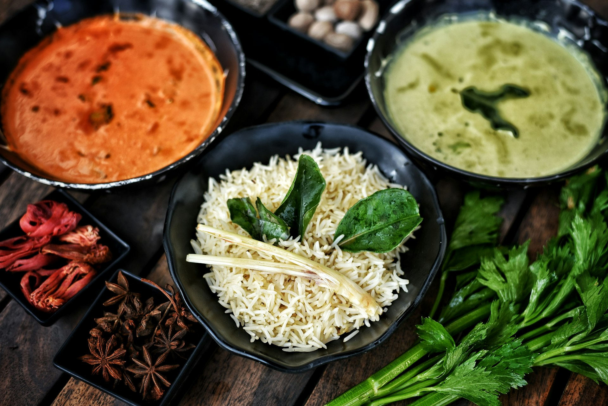

Karva · Little Elm, Texas
The Menu
Indian kitchenThai kitchen
Chaat
(All fifteen are vegetarian)
Pani Puri / Golgappa
Dahi Batata Puri
Papdi Chaat
Bhel Puri
Samosa Chaat
Aloo Tikki Chaat
Avocado Chaat, a Karva creation
Crispy Spinach Chaat
Shakarkandi Chaat
Pyaaz Kachori
Raj Kachori
Dahi Puri with Tadka Guacamole
Indo-Mex Papdi Chaat, a Karva creation
Crispy Lotus Stem Chaat
Panchmel Dal with Mathri
Soups
(Four bowls to start slowly)
Appetizers
(Crisp, hot, from the kadai)
Kebabs
(From the tandoor, charred at the edges)
Curries
(Slow gravies, finished with butter and cream)
South Indian
(Ghee roast, curry leaf and coconut)
Rice & Biryani
(Sealed, and slow on dum)
Breads
(Torn warm, straight from the tandoor)
Desserts
(Saffron, cardamom, and a last spoonful)
Thai Kitchen
(The second kitchen · the full Thai menu is at the table)
Symbol key
- Vegetarian
- Vegan
- Non-vegetarian
- Contains gluten
- Contains dairy
- Contains peanuts
- Contains mustard
- Contains soy
- Contains sesame
Allergen symbols on the chaat are marked from Karva's kitchen recipes, chutneys and masalas included. Other dishes show only the non-vegetarian mark until the kitchen lists their allergens. Please confirm every allergy with your server.
Spice can be adjusted for every dish.
Please tell your server about any allergies before you order.
Reserve your table